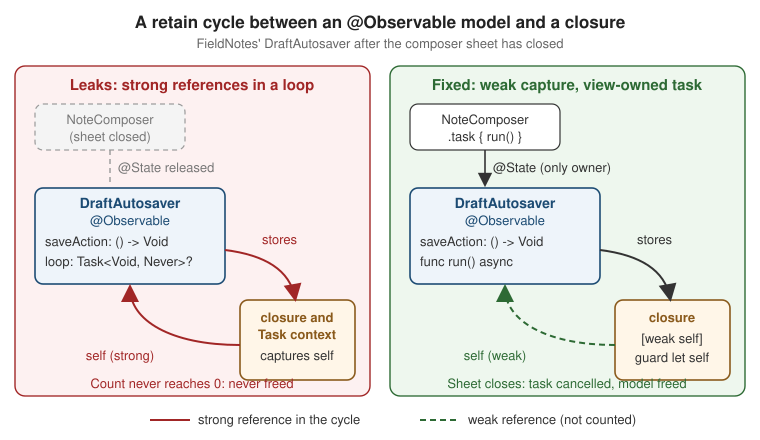

Debugging with Xcode and LLDB
|
This content was generated with the assistance of AI and should be verified against the official documentation before being relied on in production. |
A bug report says "the pin toggles back after a second" or "the app got slower after I opened the composer ten times". Neither tells you where to look. Debugging is the search that turns such a symptom into one line of code, and Xcode’s debugger, built on LLDB, is the main tool for it. This page debugs FieldNotes with the 2026 baseline of this section: iOS, iPadOS, macOS, watchOS and visionOS 27, Xcode 27 and Swift 6.4, with a deployment minimum of 26. It covers breakpoints, the LLDB commands you use at a breakpoint, stepping through Swift concurrency, the visual debuggers for views and memory, the runtime sanitizers, a crash every app meets once (a missing privacy key), and running on physical devices through Device Hub.
LLDB as a command-line tool, swiftc -g, and the short list of LLDB commands are covered language-side on
Build and Tooling; this page does not repeat them and
concentrates on what Xcode adds around them. Logs and crash reports from the field are on
Logging, MetricKit, Crash Reports and Organizer, and
performance problems are on Performance and Instruments.
The Debugging Loop
A debugging session is a loop. You run the app under the debugger, something makes it break (a breakpoint, an uncaught error, a sanitizer report, or the Pause button), you inspect variables and step through the code, and then you continue until the next stop. Every tool on this page plugs into one state of this loop.
Figure: Run, break, inspect, continue
The WWDC24 session Run, Break, Inspect frames debugging as a search problem: each stop should cut the space where the bug can hide. Good breakpoints stop late enough that the state is interesting and early enough that it is not yet corrupted; good inspection answers one question per stop.
Breakpoints
Line breakpoints
Click the gutter next to a line to add a breakpoint; drag it away to remove it. The Breakpoint navigator (Command-8) lists every breakpoint in the workspace, lets you name them, filter them and switch them on or off, and the breakpoint button in the debug bar activates or deactivates all of them at once. The same breakpoint can be created from the LLDB console, which is handy when you want to add one while the app is paused without reaching for the mouse:
# In the Xcode debug console, while FieldNotes is paused
(lldb) breakpoint set --file NoteStore.swift --line 71
(lldb) breakpoint list
(lldb) breakpoint disable 1Here line 71 stands for the first line of NoteStore's togglePin(_:) (from
Persisting Models with SwiftData); use the line number your file has. A breakpoint on a line inside a Swift package works the same way as one in the app target, as long
as the package is built from source.
Conditions, ignore counts and log-and-continue actions
The "pin toggles back" bug only happens for some notes. Stopping on every togglePin(_:) call would be slow, so
the breakpoint gets a condition. Control-click the breakpoint, choose Edit Breakpoint, and enter an
expression that uses variables in scope; the debugger evaluates it at every hit and stops only when it is true.
The Ignore field skips the first n hits, for bugs that appear after a number of iterations.
A breakpoint can also run actions instead of stopping: Log Message, Debugger Command, Shell Command,
AppleScript or Sound. With Automatically continue after evaluating actions selected, the breakpoint becomes a
temporary log statement that needs no rebuild. In a Log Message action, text between @ characters is
evaluated as an expression, so togglePin: @note.title@ pinned=@note.isPinned@ prints the note each time. The
LLDB equivalent of that edited breakpoint is:
(lldb) breakpoint set --file NoteStore.swift --line 71 \
--condition 'note.tags.contains("site-A")' \
--ignore-count 2 \
--command 'v note.title note.isPinned' \
--auto-continue trueLog-and-continue breakpoints are cheaper than print statements you must remember to delete, but they are much
slower than real code: each hit stops the process, runs the action, and resumes it. For a line that runs
thousands of times per second, add a permanent Logger call instead (see
Logging, MetricKit, Crash Reports and Organizer).
Symbolic breakpoints
A symbolic breakpoint stops on a function by name, including functions you have no source for. Add one from
the + button at the bottom of the Breakpoint navigator. The classic UIKit example is
UIViewAlertForUnsatisfiableConstraints, which stops when Auto Layout breaks a constraint in one of the UIKit
screens FieldNotes still hosts. For Swift code, a regular expression is often easier than an exact mangled name:
# Stop in every NoteStore method whose name starts with "delete", in the app and its packages
(lldb) breakpoint set --func-regex 'NoteStore\.delete'
# Stop when UIKit reports an unsatisfiable constraint
(lldb) breakpoint set --name UIViewAlertForUnsatisfiableConstraintsA symbol that fires very often (a layout method, objc_msgSend) makes the app unusable. Leave such a breakpoint
disabled, stop at a breakpoint in your own code first, then enable it.
Swift error and exception breakpoints
When a try! crashes, the debugger shows the try! line, not the place where the error was thrown. A Swift
Error Breakpoint stops at the throw itself. An Exception Breakpoint does the same for Objective-C (and
C++) exceptions, which otherwise surface in main or the app delegate with an unhelpful stack.
FieldNotes rarely uses try!, but NoteStore's write queue catches and logs persistence errors, so a failing
save shows up only as a log line. A Swift error breakpoint catches the error at its source inside
SwiftDataNotePersistence:
(lldb) breakpoint set --language-exception swift # same as: breakpoint set -E swift
(lldb) breakpoint set -E objc # Objective-C exceptions
(lldb) continue
# ...FieldNotes stops on the `throw` inside SwiftDataNotePersistence.save(_:)
(lldb) bt 5Errors thrown and caught on purpose (a cancelled Task.sleep, a CancellationError) also stop at a Swift error
breakpoint. Give it a condition, or add it only while you chase one bug.
Runtime issue breakpoints
The sanitizers and the Main Thread Checker (covered below) report problems as purple runtime issues. By default they log and continue. A Runtime Issue Breakpoint pauses the app at the exact point the checker complains, with the offending thread selected. Add one from the + menu in the Breakpoint navigator and pick the issue type.
Inspecting State with LLDB
Once paused, the variables view shows the current frame, and hovering over a variable in the editor shows its value. The console is more precise. Four commands cover nearly everything:
| Command | What it does | Use it when |
|---|---|---|
|
Reads a variable straight from memory. Doesn’t compile or run code, and resolves the dynamic type of protocol existentials. |
Always try first. Fast, no side effects, works when |
|
Compiles and runs a Swift expression in the paused process, printing the result as a data structure. |
Calling methods and computed properties, combining values, or changing a variable. |
|
Like |
Objects with a meaningful description, for example Foundation and UIKit types. |
|
Prints the call stack of the current thread; |
Finding how execution got here, and what other threads are doing. |
A short session at the togglePin(_:) breakpoint:
(lldb) v note.title note.isPinned
(String) note.title = "Beetle traps, site A"
(Bool) note.isPinned = false
(lldb) p notes.count
(Int) $R0 = 48
(lldb) p notes.firstIndex(where: { $0.id == note.id })
(Int?) $R1 = 12
(lldb) expr notes[12].isPinned = true
(lldb) po persistence
▿ Optional<NotePersisting>
- some : <SwiftDataNotePersistence: 0x6000021c4f00>
(lldb) bt 4
* thread #1, queue = 'com.apple.main-thread', stop reason = breakpoint 1.1
* frame #0: FieldNotesServices`NoteStore.togglePin(_:) at NoteStore.swift:71
frame #1: FieldNotes`closure #1 in NoteList.body.getter at NoteList.swift:23
frame #2: SwiftUI`...expr changes a value in the running process, which lets you test a hypothesis ("does the row redraw if the flag
is true?") without a rebuild. v fails on computed properties and method calls because it only reads memory,
and p/po can fail on a value declared as a protocol type; when one command fails, try the other.
Custom LLDB commands and type formatters written against the scripting bridge target Python 3: LLDB moved its scripting bridge to Python 3 in Xcode 11, and Python 2 scripts need porting.
@DebugDescription
po runs debugDescription inside the app, which is slow and can have side effects, and the variables view
doesn’t call it at all. The @DebugDescription macro converts a simple description into an LLDB type summary
at compile time, so v, p and the variables view show it without running any code. FieldNotes adds one to
Note:
// Packages/FieldNotesKit/Sources/FieldNotesModel/Note.swift (updated: debugger summary)
@DebugDescription
public struct Note: Identifiable, Hashable, Sendable, CustomDebugStringConvertible {
// ... stored properties and init unchanged ...
public var debugDescription: String {
"\(title) [pinned: \(isPinned)]"
}
}The description must be a single string interpolation of stored properties: no function calls, no
conditionals and no computed properties (so tags.count is not allowed). With it, v note prints
(FieldNotesModel.Note) note = "Beetle traps, site A [pinned: false]", and every Note in an array shows the same
summary in the variables view.
Debugging Concurrency: Stepping Across await
Stepping works line by line: Step Over (F6) runs the current line, Step Into (F7) enters the call, and Step
Out (F8) finishes the current function. An await is a possible suspension point, so the code after it may
resume later and, for nonisolated or @concurrent code, on a different thread. The debugger follows the
task, not the thread: stepping over an await stops at the next line of the same task, even when the
continuation runs somewhere else. Since Xcode 26 this also holds when a step migrates the task to another thread.
Set a breakpoint at the start of NoteStore's load() and step over the fetches:
// Packages/FieldNotesKit/Sources/FieldNotesServices/NoteStore.swift (excerpt from the SwiftData page)
public func load() async {
guard let persistence else { return }
while true {
let writesBefore = writeCount
await lastWrite?.value // 1. step over: waits for queued writes
do {
let loadedNotebooks = try await persistence.fetchNotebooks() // 2. runs on the model actor
let loadedNotes = try await persistence.fetchNotes() // 3. back here, on the main actor
guard writeCount == writesBefore else { continue }
notebooks = loadedNotebooks
notes = loadedNotes
} catch {
log.error("Loading notes failed: \(error.localizedDescription)")
}
return
}
}Step Over on line 2 does not show the actor’s code; it stops on line 3 once the fetch has returned. To see the
fetch itself, Step Into line 2, which lands in SwiftDataNotePersistence's method on the actor’s executor;
bt then shows a logical backtrace made of async frames, not the physical thread stack. While the main actor
is suspended at an await, other main-actor work (a tap, a SwiftUI update) can run and hit other breakpoints
first; that is reentrancy, explained on Swift Concurrency in Apps.
Xcode 27’s LLDB adds a command that prints every Swift task it knows about as a tree, which makes the names given
with Task(name:) and .task(name:) on that page useful at a breakpoint:
(lldb) language swift task tree
(lldb) help language swift task tree
(lldb) thread backtrace all # every thread, including the cooperative poolThe same names appear in Instruments' Swift concurrency instruments, covered on
Performance and Instruments. A quick way to confirm that code
runs where you expect is p Thread.isMainThread at a breakpoint; to enforce it, rely on actor isolation and
Swift 6 checking rather than on the debugger.
Visual Debuggers
The view debugger
When a view is missing, clipped or in the wrong place, click Debug View Hierarchy in the debug bar. Xcode pauses the app and shows the window as a 3D stack of layers, with the hierarchy in the Debug navigator and the selected view’s frame, constraints and properties in the inspectors. It works for SwiftUI and UIKit (and AppKit) views on iOS, iPadOS, macOS and watchOS. SwiftUI views appear as the platform views and layers they render to, so look for the hosting view and the SwiftUI-named nodes under it.
For layout questions it helps to make the frames visible in the running app too. FieldNotes keeps a debug-only modifier for that:
// FieldNotes/Debug/DebugOutline.swift
import SwiftUI
extension View {
/// Draws a hairline around the view in Debug builds; does nothing in Release.
func debugOutline(_ color: Color = .red) -> some View {
#if DEBUG
overlay { Rectangle().stroke(color, lineWidth: 1) }
#else
self
#endif
}
}
// Usage while chasing a layout bug in NoteRow:
// HStack { ... }.debugOutline(.blue)On visionOS the view debugger is complemented by Debug Visualizations in the debug bar: axes, bounds, anchors and collision shapes for RealityKit content, and the occlusion mesh and surfaces the device detects. Use them for the notes map from Augmented Reality with ARKit and RealityKit; an entity that ignores taps usually lacks a collision shape.
Environment overrides
Some bugs appear only with the largest Dynamic Type size, in Dark Mode, or with Increase Contrast. Environment Overrides in the debug bar change the interface style, the text size and a set of accessibility settings of the running app (on iOS, iPadOS and macOS) without touching the device’s Settings. Once an override reveals the bug, freeze the case in a preview so it stays fixed:
// FieldNotes/Views/NoteRow.swift (preview that reproduces an override)
#Preview("Accessibility 3, dark") {
List {
NoteRow(note: Note(title: "A very long title that wraps at large sizes", tags: ["site-A", "beetles"]))
}
.environment(\.dynamicTypeSize, .accessibility3)
.preferredColorScheme(.dark)
}Accessibility settings themselves, and the audits that go with them, are on Accessibility.
The memory graph and malloc stack logging
"Slower after opening the composer ten times" smells like a leak. While the app runs, the memory gauge in the Debug navigator shows current and peak use. Click Debug Memory Graph in the debug bar to pause the app and capture every heap object and the references between them. The navigator lists objects by type with instance counts, and a purple issue marks objects that are part of a leaked cycle: a set of objects that only reference each other and that nothing else can reach.
A graph shows what is alive; malloc stack logging adds where it was allocated. Turn on Malloc Stack
Logging (live allocations only is enough) in the scheme’s Run > Diagnostics tab, and the inspector for each
node shows the backtrace of its allocation. The same switches work from the command line, and an exported graph
(File > Export Memory Graph) can be read with the leaks, heap and vmmap tools:
# Scheme > Run > Arguments > Environment Variables, or when launching the Mac build by hand:
MallocStackLogging=lite ./FieldNotes.app/Contents/MacOS/FieldNotes &
# Read an exported graph on the Mac
leaks FieldNotes.memgraph # leaked cycles, with allocation stacks if logging was on
heap --sortBySize FieldNotes.memgraph
vmmap --summary FieldNotes.memgraphSome secondary summaries of Xcode 27 say that the memory graph now also shows SwiftUI state graphs. Neither the Xcode 27 release notes nor Apple’s memory-use article mention this at the time of writing, so this page does not rely on it; the SwiftUI instrument on Performance and Instruments is the documented way to see why views update.
Hand-rolled DTrace scripts are largely superseded for this kind of work too: System Integrity Protection restricts
DTrace unless it is deliberately disabled, so Instruments, together with os_signpost intervals, is the supported
way to trace what DTrace used to cover (see
Performance and Instruments). See Apple Developer Documentation — Disabling and enabling System Integrity Protection.
Figure: A retain cycle between an @Observable model and a closure

The figure shows the leak found with the memory graph below. Each solid arrow is a strong reference. Swift frees an object when no strong references remain, so a loop of strong references is never freed, even after the view that created it is gone.
Finding and fixing the cycle
The first version of the composer’s autosave helper looked harmless. It stored the save logic in a closure and started its own loop:
// FieldNotes/Views/DraftAutosaver.swift (first version: leaks)
import Foundation
import Observation
@Observable
final class DraftAutosaver {
let draft: NoteDraft
private(set) var lastSaved: Date?
@ObservationIgnored private var saveAction: () -> Void = {}
@ObservationIgnored private var loop: Task<Void, Never>?
init(draft: NoteDraft) {
self.draft = draft
saveAction = {
// (1) The closure captures self strongly, and self stores the closure.
UserDefaults.standard.set([self.draft.title, self.draft.body], forKey: "composer.recovery")
self.lastSaved = .now
}
loop = Task {
while true {
do { try await Task.sleep(for: .seconds(10)) } catch { return }
self.saveAction() // (2) The task captures self; self stores the task.
}
}
}
}NoteDraft is the draft model from App Architecture the Apple Way.
After opening and closing the composer ten times, the memory graph lists ten DraftAutosaver instances, each
flagged as a leak; selecting one shows the path DraftAutosaver → closure context → DraftAutosaver, and with
malloc stack logging on, the closure’s allocation backtrace points at init(draft:). The ten autosave loops are
still running, too, which is why the app got slower.
The fix removes both strong loops. A stored closure that must refer back to its owner captures it weak, and a
loop that should live as long as a view runs in that view’s .task, which SwiftUI cancels when the view
disappears:
// FieldNotes/Views/DraftAutosaver.swift (fixed)
import Foundation
import Observation
@Observable
final class DraftAutosaver {
let draft: NoteDraft
private(set) var lastSaved: Date?
@ObservationIgnored private var saveAction: () -> Void = {}
init(draft: NoteDraft) {
self.draft = draft
saveAction = { [weak self] in
guard let self else { return }
UserDefaults.standard.set([draft.title, draft.body], forKey: "composer.recovery")
lastSaved = .now
}
}
/// Saves every ten seconds until the calling task is cancelled.
func run() async {
while true {
do { try await Task.sleep(for: .seconds(10)) } catch { return } // cancelled: the sheet closed
saveAction()
}
}
}
// FieldNotes/Views/NoteComposer.swift (excerpt: the draft is autosaved)
struct NoteComposer: View {
@Environment(NoteStore.self) private var store
@Environment(\.dismiss) private var dismiss
@State private var autosaver = DraftAutosaver(draft: NoteDraft())
let notebookID: Notebook.ID?
var body: some View {
NavigationStack {
NoteDraftForm(draft: autosaver.draft)
.toolbar {
Button("Save") {
let draft = autosaver.draft
store.add(Note(title: draft.title, body: draft.body,
notebookID: notebookID, tags: draft.tags))
dismiss()
}
.disabled(autosaver.draft.title.isEmpty)
}
}
.task(name: "Autosave draft") { await autosaver.run() }
}
}
#Preview {
NoteComposer(notebookID: nil)
.environment(NoteStore())
}While run() is suspended, its task still holds the autosaver, but only until SwiftUI cancels the task when the
composer closes; Task.sleep then throws and the loop returns. Capture lists and ownership rules are explained
language-side on Automatic Reference Counting. To
confirm the fix, repeat the ten open-and-close cycles and check that the memory graph shows no DraftAutosaver
at all; the Allocations instrument’s generations on
Performance and Instruments measure the same thing over a
longer session.
Runtime Checkers: Sanitizers and the Main Thread Checker
Some bugs corrupt memory or race silently and crash far from their cause. Xcode’s runtime checkers instrument the
app so the bug is reported where it happens. Enable them in the scheme editor (Product > Scheme > Edit Scheme,
Run or Test, Diagnostics), from xcodebuild, or in a test plan configuration.
| Tool | Finds | Cost and limits | Swift? |
|---|---|---|---|
Address Sanitizer (ASan) |
Use after free, buffer overflows, use of out-of-scope stack memory |
2 to 3 times the memory, 2x to 5x slower; doesn’t find leaks or uninitialized reads |
Yes |
Thread Sanitizer (TSan) |
Data races, uninitialized mutexes, thread leaks |
5 to 10 times the memory, 2x to 20x slower; macOS apps and Simulators only, not on devices |
Yes |
Undefined Behavior Sanitizer (UBSan) |
Division by zero, misaligned pointers, integer overflow, null dereference in C-based code |
About 20% CPU overhead |
No, C, Objective-C and C++ only |
Main Thread Checker |
UIKit, AppKit and other main-thread-only system APIs called from a background thread |
1 to 2% CPU, under 100 ms extra launch time; on by default in Debug schemes |
Yes |
ASan and TSan can’t run together; FieldNotes' test plan runs them in separate configurations. The Sanitizers
configuration of FieldNotes.xctestplan, defined on
UI Tests, Test Plans, Performance Tests and Coverage, turns
on ASan and UBSan; a scheme run with TSan checks the Mac build:
# Run the unit tests with the Sanitizers configuration of the test plan
xcodebuild test -scheme FieldNotes -testPlan FieldNotes \
-only-test-configuration Sanitizers \
-destination 'platform=iOS Simulator,name=iPhone 17'
# Build and test the Mac app with Thread Sanitizer
xcodebuild test -scheme FieldNotes -destination 'platform=macOS' -enableThreadSanitizer YES
# Address Sanitizer and UBSan from the command line
xcodebuild build -scheme FieldNotes -destination 'platform=macOS' \
-enableAddressSanitizer YES -enableUndefinedBehaviorSanitizer YESWith Swift 6 language mode, data-race safety is checked at compile time, so TSan finds fewer races in pure Swift
code. It still earns its place for the parts the compiler trusts you on: @unchecked Sendable types such as the
LockedDraftBuffer on Swift Concurrency in Apps, nonisolated(unsafe)
declarations, Objective-C and C++ code, and C libraries. ASan is similarly most useful around
UnsafeMutablePointer, withUnsafeBytes and C buffers.
The Main Thread Checker catches the classic callback bug: a completion handler that an older SDK calls on its own
queue, touching UIKit directly. FieldNotes' export banner shows the bug and the fix, using the LegacyExportClient
and its async wrapper export(_:) from Swift Concurrency in Apps:
// FieldNotes/Export/ExportStatusBanner.swift
#if canImport(UIKit)
import UIKit
import FieldNotesModel
final class ExportStatusBanner: UIView {
private let label = UILabel()
// Before: the client calls back on a private queue, so this closure set `label.text` off the main
// thread, and the Main Thread Checker reported "UILabel.text must be used from main thread only".
// client.export(noteID: note.id) { result in self.label.text = ... }
// After: await the async wrapper. The banner is main-actor isolated, so the code after `await`
// runs on the main actor again.
func showExport(of note: Note, using client: LegacyExportClient) {
Task(name: "Export \(note.title)") {
do {
let url = try await client.export(note)
label.text = "Exported to \(url.lastPathComponent)"
} catch {
label.text = "Export failed: \(error.localizedDescription)"
}
}
}
}
#endifWith Swift 6 checking, most such mistakes no longer compile: the compiler knows UILabel is main-actor isolated.
The Main Thread Checker covers what the compiler can’t see: Objective-C code, and Swift that reaches UIKit or
AppKit through @preconcurrency imports, unannotated completion handlers or DispatchQueue callbacks.
Crashes from Missing Privacy Keys
Every API that reads protected data or hardware (the camera, location, photos, contacts, motion, Bluetooth and
more) needs a purpose string in Info.plist. Without one, the system terminates the app the first time it asks,
before any permission prompt appears. In the debugger the app stops with a message in the console saying that it
tried to access privacy-sensitive data without a usage description and naming the missing key; in a crash report
the Termination Reason field names the privacy subsystem (TCC) as the reason:
Exception Type: EXC_CRASH (SIGABRT)
Termination Reason: Namespace TCC, Code 0
This app has crashed because it attempted to access privacy-sensitive data without a usage description.
The app's Info.plist must contain an NSCameraUsageDescription key with a string value explaining to the
user how the app uses this data.The fix is the missing key, with a sentence that tells the person why FieldNotes needs the access. FieldNotes
generates its Info.plist from build settings, so the keys live in the target’s build settings (or an
.xcconfig), with a localizable string:
<!-- FieldNotes/Info.plist (the keys FieldNotes needs) -->
<key>NSCameraUsageDescription</key>
<string>FieldNotes uses the camera to attach photos to your notes.</string>
<key>NSLocationWhenInUseUsageDescription</key>
<string>FieldNotes records where you took a note so you can find it on the map.</string>// Config/FieldNotes.xcconfig: the same keys as generated-Info.plist build settings
INFOPLIST_KEY_NSCameraUsageDescription = FieldNotes uses the camera to attach photos to your notes.
INFOPLIST_KEY_NSLocationWhenInUseUsageDescription = FieldNotes records where you took a note so you can find it on the map.Each app extension has its own Info.plist: a widget or share extension that reads the location needs the key in
its own target too. The full list of keys, and how to ask for permission at the right moment, is on
Security and Privacy; the privacy manifest and the
rest of Info.plist are on
Membership, Signing, Capabilities and Info.plist.
Debugging on Devices with Device Hub (27)
Simulators are fast, but they don’t reproduce device performance, memory limits, sensors, the camera or real push notifications. In Xcode 27, Device Hub replaces the old Devices and Simulators window as the place where simulators and physical devices are managed. Open it from Manage Devices… in the run destination menu or Xcode > Open Developer Tool > Device Hub. From there you:
-
Pair devices. Pair Nearby Device… pairs an iPhone, iPad or Apple Watch running 27 over the network, without a cable; earlier versions pair with a cable once and then run over Wi-Fi. Apple Vision Pro and Apple TV broadcast themselves from their Remote Devices settings. Each device needs Developer Mode turned on, and pairing again is required after an OS update.
-
Run and debug. Choose the device as the run destination and press Run; the debugger attaches exactly as on a simulator. The device’s screen can be viewed and controlled in Device Hub (not yet for Apple Vision Pro in Device Hub 27).
-
Collect crash reports and app data. The Reports tab lists the device’s crash reports, symbolicated against the builds on your Mac, and app data containers can be downloaded for inspection.
The command line reaches the same devices through devicectl, which is also how scripts install a build and read
its console:
xcrun devicectl list devices
xcrun devicectl device install app --device 00008130-001A2B3C4D5E6F70 build/FieldNotes.app
xcrun devicectl device process launch --device 00008130-001A2B3C4D5E6F70 --console com.example.fieldnotesRunning on a device needs a signing team; a free personal team works for your own devices, while features such as
push notifications and iCloud need a paid Apple Developer Program membership (see
Membership, Signing, Capabilities and Info.plist).
Distribution builds from TestFlight or the App Store can’t be debugged at all, because they lack the
get-task-allow entitlement; for them you rely on logs and crash reports.
Availability and Requirements
Platform availability
| API or feature | iOS | iPadOS | macOS | watchOS | visionOS |
|---|---|---|---|---|---|
Breakpoints, LLDB |
Yes |
Yes |
Yes |
Yes |
Yes |
|
Yes |
Yes |
Yes |
Yes |
Yes |
|
New in 27 |
New in 27 |
New in 27 |
New in 27 |
New in 27 |
View debugger |
Yes |
Yes |
Yes |
Yes |
Not available (Debug Visualizations instead) |
Environment overrides |
Yes |
Yes |
Yes |
Not available |
Not available |
Memory graph and malloc stack logging |
Yes |
Yes |
Yes |
Yes |
Yes |
Address Sanitizer |
Yes |
Yes |
Yes |
Yes |
Yes |
Thread Sanitizer |
Simulator only |
Simulator only |
Yes |
Simulator only |
Simulator only |
Undefined Behavior Sanitizer (C-based code) |
Yes |
Yes |
Yes |
Yes |
Yes |
Main Thread Checker |
Yes |
Yes |
Yes |
Not documented |
Yes |
Device Hub wireless pairing |
New in 27 |
New in 27 |
Not applicable (runs locally) |
New in 27 |
Yes (Remote Devices) |
Requirements
-
Debugging on a physical device needs Developer Mode on the device and a signing team; capabilities such as push and iCloud need a paid developer account.
-
Wireless pairing from Device Hub needs iOS, iPadOS or watchOS 27 on the device; tvOS and visionOS pairing needs IPv6 on the Wi-Fi network.
-
Thread Sanitizer needs a Simulator or a Mac run destination.
-
Builds from TestFlight and the App Store can’t be attached to; use logs, MetricKit and crash reports.
Where to Go Next
When the bug only happens in the field, the evidence arrives as logs, MetricKit diagnostics and crash reports: Logging, MetricKit, Crash Reports and Organizer. When the app is correct but slow, profile it: Performance and Instruments. To keep a fixed bug fixed, write a test for it: Unit Testing with Swift Testing. Background tasks have their own debugging commands on Background Execution.
Shader and GPU bugs in a Metal app are debugged with the GPU frame capture and the shader debugger, covered on Debugging and Profiling Metal.
References
-
Apple Developer Documentation — Diagnosing and resolving bugs in your running app
-
Apple Developer Documentation — Setting breakpoints to pause your running app
-
Apple Developer Documentation — Stepping through code and inspecting variables to isolate bugs
-
Apple Developer Documentation — Diagnosing issues in the appearance of a running app
-
Apple Developer Documentation — Gathering information about memory use
-
Apple Developer Documentation — Disabling and enabling System Integrity Protection
-
Apple Developer Documentation — Diagnosing memory, thread, and crash issues early
-
Apple Developer Documentation — Examining the fields in a crash report
-
Apple Developer Documentation — Managing your simulated and physical devices in Device Hub
-
Apple Developer Documentation — Running your app on simulated or physical devices
-
Apple Developer Documentation -- task(name:priority:file:line:_:)
-
WWDC24 — Run, Break, Inspect: Explore effective debugging in LLDB